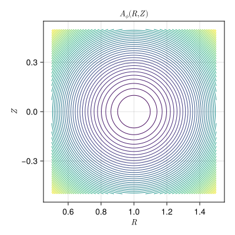
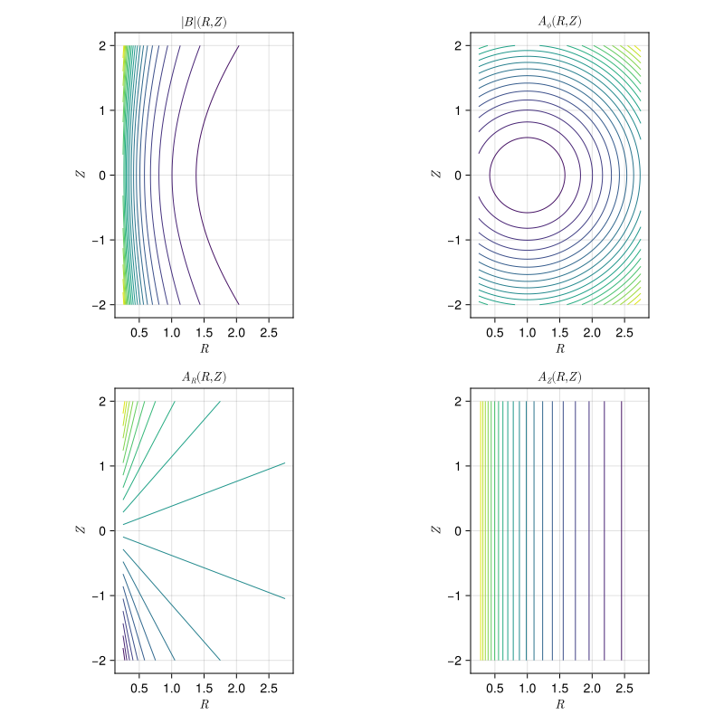

Axisymmetric Tokamak (Cylindrical)
ElectromagneticFields.AxisymmetricTokamakCylindrical — Module
Axisymmetric tokamak equilibrium in (R,Z,ϕ) coordinates with covariant components of the vector potential given by
\[A (R, Z, \phi) = \frac{B_0}{2} \, \bigg( R_0 \, \frac{Z}{R} , \, - R_0 \, \ln \bigg( \frac{R}{R_0} \bigg) , \, + \frac{r^2}{q_0} \bigg)^T ,\]
resulting in the magnetic field with covariant components
\[B (R, Z, \phi) = \frac{B_0}{q_0} \, \bigg( - \frac{Z}{R} , \, \frac{R - R_0}{R} , \, + q_0 R_0 \bigg)^T ,\]
where $r = \sqrt{ (R - R_0)^2 + Z^2 }$.
Parameters:
R₀: position of magnetic axisB₀: B-field at magnetic axisq₀: safety factor at magnetic axis
Constructing the Field
using CairoMakie
using ElectromagneticFields
equ = AxisymmetricTokamakCylindrical.init()Axisymmetric Tokamak Equilibrium in (R,Z,ϕ) Coordinates with
R₀ = 1.0
B₀ = 1.0
q₀ = 2.0Plotting
In cylindrical coordinates the flux surfaces are the contours of the poloidal flux function $\psi = A_\phi$, the covariant toroidal component of the vector potential. They are circles centred on the magnetic axis:
plot_equilibrium(equ)
Evaluating the Field
AxisymmetricTokamakCylindrical.@code()The generated functions take the time followed by the three coordinates $(R, Z, \phi)$. Here the absolute value of the magnetic field and the three components of the vector potential are sampled on a poloidal grid that extends well beyond the plasma:
nr, nz = 100, 120
Rgrid = LinRange(0.25, 2.75, nr)
Zgrid = LinRange(-2.0, +2.0, nz)
sample(f) = [f(0.0, Rgrid[i], Zgrid[j], 0.0) for i in eachindex(Rgrid), j in eachindex(Zgrid)]
Bfield = sample(B)
A_R = sample(A₁)
A_Z = sample(A₂)
A_ϕ = sample(A₃)
extrema(Bfield)(0.48319810854014983, 5.852349955359813)The magnetic field is strongest on the inboard side, and it is $A_\phi$ whose contours are the flux surfaces. The other two components of the vector potential generate the toroidal field: $A_R$ grows linearly in $Z$, while $A_Z$ depends on $R$ alone, so its contours are vertical lines.
fig = Figure(size = (800, 800))
panels = ((Bfield, L"|B| (R,Z)"), (A_ϕ, L"A_\phi (R,Z)"),
(A_R, L"A_R (R,Z)"), (A_Z, L"A_Z (R,Z)"))
for (n, (vals, title)) in enumerate(panels)
ax = Axis(fig[cld(n,2), mod1(n,2)];
xlabel = L"R", ylabel = L"Z", title = title, aspect = DataAspect())
contour!(ax, Rgrid, Zgrid, vals; levels = 20)
end
fig